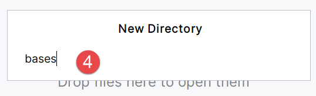

2. Les exemples de ce document
Je vais présenter maintenant des exemples des particularités de mes documents ODT que le convertisseur Gemini gère correctement. C’est ce propre document que nous proposerons à la conversion HTML au script de Gemini. Nous verrons ce qu’il en fait.
2.1. Les listes
Le convertisseur Gemini sait gérer les listes à puces et les listes numérotées :
Listes à puces
- Élément 1 ;
- Élément 2 :
- Élément 3 ;
- Élément 3.1 ;
- Élément 3.2 ;
- Élément 4 ;
Listes numérotées
- Élément 1 ;
- Élément 2 ;
- Élément 3 ;
2.2. Les blocs de code
Mes cours contiennent beaucoup de blocs de code. Le convertisseur Gemini sait à peu près les gérer à l’aide de mots clés du langage mis dans un fichier de configuration. Lorsqu’il reconnaît un langage il insère un marqueur (fence) pour MkDocs afin qu’il adapte la coloration syntaxique du code au langage utilisé dans le bloc de code.
Java
| package istia.st.spring.core;
import java.util.ArrayList;
import java.util.List;
import org.springframework.context.ApplicationContext;
import org.springframework.context.support.ClassPathXmlApplicationContext;
public class Demo01 {
@SuppressWarnings({ "unchecked", "resource" })
public static void main(String[] args) {
// récupération du contexte Spring
ApplicationContext ctx = new ClassPathXmlApplicationContext("config-01.xml");
// on récupère les beans
Personne p01 = ctx.getBean("personne_01", Personne.class);
Personne p02 = ctx.getBean("personne_02", Personne.class);
List<Personne> club = ctx.getBean("club", new ArrayList<Personne>().getClass());
Appartement appart01 = ctx.getBean(Appartement.class);
// on les affiche
System.out.println("personnes--------");
System.out.println(p01);
System.out.println(p02);
System.out.println("club--------");
for (Personne p : club) {
System.out.println(p);
}
System.out.println("appartement--------");
System.out.println(appart01);
// les beans récupérés sont des singletons
// on peut les demander plusieurs fois, on récupère toujours le même bean
Personne p01b = ctx.getBean("personne_01", Personne.class);
System.out.println(String.format("beans [p01,p01b] identiques ? %s", p01b == p01));
}
}
|
C#
| using System;
namespace Chap1 {
class Impots {
static void Main(string[] args) {
// tableaux de données nécessaires au calcul de l'impôt
decimal[] limites = { 4962M, 8382M, 14753M, 23888M, 38868M, 47932M, 0M };
decimal[] coeffR = { 0M, 0.068M, 0.191M, 0.283M, 0.374M, 0.426M, 0.481M };
decimal[] coeffN = { 0M, 291.09M, 1322.92M, 2668.39M, 4846.98M, 6883.66M, 9505.54M };
// on récupère le statut marital
bool OK = false;
string reponse = null;
while (!OK) {
Console.Write("Etes-vous marié(e) (O/N) ? ");
reponse = Console.ReadLine().Trim().ToLower();
if (reponse != "o" && reponse != "n")
Console.Error.WriteLine("Réponse incorrecte. Recommencez");
else OK = true;
}//while
bool marie = reponse == "o";
// nombre d'enfants
OK = false;
int nbEnfants = 0;
while (!OK) {
Console.Write("Nombre d'enfants : ");
try {
nbEnfants = int.Parse(Console.ReadLine());
OK = nbEnfants >= 0;
} catch {
}// try
if (!OK) {
Console.WriteLine("Réponse incorrecte. Recommencez");
}
}// while
// salaire
OK = false;
int salaire = 0;
while (!OK) {
Console.Write("Salaire annuel : ");
try {
salaire = int.Parse(Console.ReadLine());
OK = salaire >= 0;
} catch {
}// try
if (!OK) {
Console.WriteLine("Réponse incorrecte. Recommencez");
}
}// while
// calcul du nombre de parts
decimal nbParts;
if (marie) nbParts = (decimal)nbEnfants / 2 + 2;
else nbParts = (decimal)nbEnfants / 2 + 1;
if (nbEnfants >= 3) nbParts += 0.5M;
// revenu imposable
decimal revenu = 0.72M * salaire;
// quotient familial
decimal QF = revenu / nbParts;
// recherche de la tranche d'impots correspondant à QF
int i;
int nbTranches = limites.Length;
limites[nbTranches - 1] = QF;
i = 0;
while (QF > limites[i]) i++;
// l'impôt
int impots = (int)(coeffR[i] * revenu - coeffN[i] * nbParts);
// on affiche le résultat
Console.WriteLine("Impôt à payer : {0} euros", impots);
}
}
}
|
Python
| # ----------------------------------
def affiche(chaine):
# affiche chaine
print("chaine=%s" % chaine)
# ----------------------------------
def affiche_type(variable):
# affiche le type de variable
print("type[%s]=%s" % (variable, type(variable)))
# ----------------------------------
def f1(param):
# ajoute 10 à param
return param + 10
# ----------------------------------
def f2():
# rend un tuple de 3 valeurs
return "un", 0, 100
# -------------------------------- programme principal ------------------------------------
# ceci est un commentaire
# variable utilisée sans avoir été déclarée
nom = "dupont"
# un affichage écran
print("nom=%s" % nom)
# une liste avec des éléments de type différent
liste = ["un", "deux", 3, 4]
# son nombre d'éléments
n = len(liste)
# une boucle
for i in range(n):
print("liste[%d]=%s" % (i, liste[i]))
# initialisation de 2 variables avec un tuple
(chaine1, chaine2) = ("chaine1", "chaine2")
# concaténation des 2 chaînes
chaine3 = chaine1 + chaine2
# affichage résultat
print("[%s,%s,%s]" % (chaine1, chaine2, chaine3))
# utilisation fonction
affiche(chaine1)
# le type d'une variable peut être connu
affiche_type(n)
affiche_type(chaine1)
affiche_type(liste)
# le type d'une variable peut changer en cours d'exécution
n = "a changé"
affiche_type(n)
# une fonction peut rendre un résultat
res1 = f1(4)
print("res1=%s" % res1)
# une fonction peut rendre une liste de valeurs
(res1, res2, res3) = f2()
print("(res1,res2,res3)=[%s,%s,%s]" % (res1, res2, res3))
# on aurait pu récupérer ces valeurs dans une variable
liste = f2()
for i in range(len(liste)):
print("liste[%s]=%s" % (i, liste[i]))
# des tests
for i in range(len(liste)):
# n'affiche que les chaînes
if type(liste[i]) == "str":
print("liste[%s]=%s" % (i, liste[i]))
# d'autres tests
for i in range(len(liste)):
# n'affiche que les entiers >10
if type(liste[i]) == "int" and liste[i] > 10:
print("liste[%s]=%s" % (i, liste[i]))
# une boucle while
liste = (8, 5, 0, -2, 3, 4)
i = 0
somme = 0
while i < len(liste) and liste[i] > 0:
print("liste[%s]=%s" % (i, liste[i]))
somme += liste[i] # somme=somme+liste[i]
i += 1 # i=i+1
print("somme=%s" % somme)
# fin programme
|
PHP
| <?php
// types stricts pour les paramètres de fonctions
declare(strict_types=1);
// constantes globales
define("PLAFOND_QF_DEMI_PART", 1551);
define("PLAFOND_REVENUS_CELIBATAIRE_POUR_REDUCTION", 21037);
define("PLAFOND_REVENUS_COUPLE_POUR_REDUCTION", 42074);
define("VALEUR_REDUC_DEMI_PART", 3797);
define("PLAFOND_DECOTE_CELIBATAIRE", 1196);
define("PLAFOND_DECOTE_COUPLE", 1970);
define("PLAFOND_IMPOT_COUPLE_POUR_DECOTE", 2627);
define("PLAFOND_IMPOT_CELIBATAIRE_POUR_DECOTE", 1595);
define("ABATTEMENT_DIXPOURCENT_MAX", 12502);
define("ABATTEMENT_DIXPOURCENT_MIN", 437);
// définition des constantes locales
$DATA = "taxpayersdata.txt";
$RESULTATS = "resultats.txt";
$limites = array(9964, 27519, 73779, 156244, 0);
$coeffR = array(0, 0.14, 0.3, 0.41, 0.45);
$coeffN = array(0, 1394.96, 5798, 13913.69, 20163.45);
// lecture des données
$data = fopen($DATA, "r");
if (!$data) {
print "Impossible d'ouvrir en lecture le fichier des données [$DATA]\n";
exit;
}
// ouverture fichier des résultats
$résultats = fopen($RESULTATS, "w");
if (!$résultats) {
print "Impossible de créer le fichier des résultats [$RESULTATS]\n";
exit;
}
// on exploite la ligne courante du fichier des données
while ($ligne = fgets($data, 100)) {
// on enlève l'éventuelle marque de fin de ligne
$ligne = cutNewLineChar($ligne);
// on récupère les 3 champs marié:enfants:salaire qui forment $ligne
list($marié, $enfants, $salaire) = explode(",", $ligne);
// on calcule l'impôt
$result = calculImpot($marié, (int) $enfants, (float) $salaire, $limites, $coeffR, $coeffN);
// on inscrit le résultat dans le fichier des résultats
$result = ["marié" => $marié, "enfants" => $enfants, "salaire" => $salaire] + $result;
fputs($résultats, \json_encode($result, JSON_UNESCAPED_UNICODE) . "\n");
// donnée suivante
}
// on ferme les fichiers
fclose($data);
fclose($résultats);
// fin
exit;
// --------------------------------------------------------------------------
function cutNewLinechar(string $ligne): string {
// on supprime la marque de fin de ligne de $ligne si elle existe
$L = strlen($ligne); // longueur ligne
while (substr($ligne, $L - 1, 1) === "\n" or substr($ligne, $L - 1, 1) === "\r") {
$ligne = substr($ligne, 0, $L - 1);
$L--;
}
// fin
return($ligne);
}
// calcul de l'impôt
// --------------------------------------------------------------------------
function calculImpot(string $marié, int $enfants, float $salaire, array $limites, array $coeffR, array $coeffN): array {
…
// résultat
return ["impôt" => floor($impot), "surcôte" => $surcôte, "décôte" => $décôte, "réduction" => $réduction, "taux" => $taux];
}
// --------------------------------------------------------------------------
function calculImpot2(string $marié, int $enfants, float $salaire, array $limites, array $coeffR, array $coeffN): array {
…
// résultat
return ["impôt" => $impôt, "surcôte" => $surcôte, "taux" => $coeffR[$i]];
}
// revenuImposable=salaireAnnuel-abattement
// l'abattement a un min et un max
function getRevenuImposable(float $salaire): float {
…
// résultat
return floor($revenuImposable);
}
// calcule une décôte éventuelle
function getDecote(string $marié, float $salaire, float $impots): float {
…
// résultat
return ceil($décôte);
}
// calcule une réduction éventuelle
function getRéduction(string $marié, float $salaire, int $enfants, float $impots): float {
/…
// résultat
return ceil($réduction);
}
|
ECMAScript
| 'use strict';
// ceci est un commentaire
// constante
const nom = "dupont";
// un affichage écran
console.log("nom : ", nom);
// un tableau avec des éléments de type différent
const tableau = ["un", "deux", 3, 4];
// son nombre d'éléments
let n = tableau.length;
// une boucle
for (let i = 0; i < n; i++) {
console.log("tableau[", i, "] = ", tableau[i]);
}
// initialisation de 2 variables avec le contenu d'un tableau
let [chaine1, chaine2] = ["chaine1", "chaine2"];
// concaténation des 2 chaînes
const chaine3 = chaine1 + chaine2;
// affichage résultat
console.log([chaine1, chaine2, chaine3]);
// utilisation fonction
affiche(chaine1);
// le type d'une variable peut être connu
afficheType("n", n);
afficheType("chaine1", chaine1);
afficheType("tableau", tableau);
// le type d'une variable peut changer en cours d'exécution
n = "a changé";
afficheType("n", n);
// une fonction peut rendre un résultat
let res1 = f1(4);
console.log("res1=", res1);
// une fonction peut rendre un tableau de valeurs
let res2, res3;
[res1, res2, res3] = f2();
console.log("(res1,res2,res3)=", [res1, res2, res3]);
// on aurait pu récupérer ces valeurs dans un tableau
let t = f2();
for (let i = 0; i < t.length; i++) {
console.log("t[i]=", t[i]);
}
// des tests
for (let i = 0; i < t.length; i++) {
// n'affiche que les chaînes
if (typeof (t[i]) === "string") {
console.log("t[i]=", t[i]);
}
}
// opérateurs de comparaison == et ===
if ("2" == 2) {
console.log("avec l'opérateur ==, la chaîne 2 est égale à l'entier 2");
} else {
console.log("avec l'opérateur ==, la chaîne 2 n'est pas égale à l'entier 2");
}
if ("2" === 2) {
console.log("avec l'opérateur ===, la chaîne 2 est égale à l'entier 2");
} else {
console.log("avec l'opérateur ===, la chaîne 2 n'est pas égale à l'entier 2");
}
// d'autres tests
for (let i = 0; i < t.length; i++) {
// n'affiche que les entiers >10
if (typeof (t[i]) === "number" && Math.floor(t[i]) === t[i] && t[i] > 10) {
console.log("t[i]=", t[i]);
}
}
// une boucle while
t = [8, 5, 0, -2, 3, 4];
let i = 0;
let somme = 0;
while (i < t.length && t[i] > 0) {
console.log("t[i]=", t[i]);
somme += t[i];
i++;
}
console.log("somme=", somme);
// arrêt du programme car il n'y a plus de code exécutable
//affiche
//----------------------------------
function affiche(chaine) {
// affiche chaine
console.log("chaine=", chaine);
}
//afficheType
//----------------------------------
function afficheType(name, variable) {
// affiche le type de variable
console.log("type[variable ", name, "]=", typeof (variable));
}
//----------------------------------
function f1(param) {
// ajoute 10 à param
return param + 10;
}
//----------------------------------
function f2() {
// rend 3 valeurs
return ["un", 0, 100];
}
|
VBScript
| ' calcul de l'impôt d'un contribuable
' le programme doit être appelé avec trois paramètres : marié enfants salaire
' marié : caractère O si marié, N si non marié
' enfants : nombre d'enfants
' salaire : salaire annuel sans les centimes
' déclaration obligatoire des variables
Option Explicit
Dim erreur
' on récupère les arguments en vérifiant leur validité
Dim marie, enfants, salaire
erreur=getArguments(marie,enfants,salaire)
' erreur ?
If erreur(0)<>0 Then wscript.echo erreur(1) : wscript.quit erreur(0)
' on récupère les données nécessaires au calcul de l'impôt
Dim limites, coeffR, coeffN
erreur=getData(limites,coeffR,coeffN)
' erreur ?
If erreur(0)<>0 Then wscript.echo erreur(1) : wscript.quit 5
' on affiche le résultat
wscript.echo "impôt=" & calculerImpot(marie,enfants,salaire,limites,coeffR,coeffN)
' on quitte sans erreur
wscript.quit 0
|
HTML
| <!DOCTYPE HTML>
<HTML>
<head>
<title>Laragon</title>
<link href="[https://fonts.googleapis.com/css?family=Karla:400](view-source:https://fonts.googleapis.com/css?family=Karla:400)" rel="stylesheet" type="text/css">
<style>
HTML, body {
height: 100%;
}
body {
margin: 0;
padding: 0;
width: 100%;
display: table;
font-weight: 100;
font-family: 'Karla';
}
.container {
text-align: center;
display: table-cell;
vertical-align: middle;
}
.content {
text-align: center;
display: inline-block;
}
.title {
font-size: 96px;
}
.opt {
margin-top: 30px;
}
.opt a {
text-decoration: none;
font-size: 150%;
}
a:hover {
color: red;
}
</style>
</head>
<body>
<div class="container">
<div class="content">
<div class="title" title="Laragon">Laragon</div>
<div class="info"><br />
Apache/2.4.35 (Win64) OpenSSL/1.1.0i PHP/7.2.11<br />
PHP version: 7.2.11 <span><a title="phpinfo()" href="[/?q=info](view-source:http://localhost/?q=info)">info</a></span><br />
Document Root: C:/myprograms/laragon-lite/www<br />
</div>
<div class="opt">
<div><a title="Getting Started" href="[https://laragon.org/docs](view-source:https://laragon.org/docs)">Getting Started</a></div>
</div>
</div>
</div>
</body>
</HTML>
|
XML
| <?xml version="1.0" encoding="utf-8" ?>
<configuration>
<configSections>
<sectionGroup name="spring">
<section name="context" type="Spring.Context.Support.ContextHandler, Spring.Core" />
<section name="objects" type="Spring.Context.Support.DefaultSectionHandler, Spring.Core" />
</sectionGroup>
</configSections>
<spring>
<context>
<resource uri="config://spring/objects" />
</context>
<objects xmlns="http://www.springframework.net">
<object name="dao" type="Dao.DataBaseImpot, ImpotsV7-dao">
<constructor-arg index="0" value="MySql.Data.MySqlClient"/>
<constructor-arg index="1" value="Server=localhost;Database=bdimpots;Uid=admimpots;Pwd=mdpimpots;"/>
<constructor-arg index="2" value="select limite, coeffr, coeffn from tranches"/>
</object>
<object name="metier" type="Metier.ImpotMetier, ImpotsV7-metier">
<constructor-arg index="0" ref="dao"/>
</object>
</objects>
</spring>
</configuration>
|
Résultats d’exécution
On notera que le code ne commence pas avec la ligne n° 1.
| C:\Data\st-2020\dev\python\cours-2020\python3-flask-2020\venv\Scripts\python.exe C:/Data/st-2020/dev/python/cours-2020/python3-flask-2020/bases/bases_01.py
nom=dupont
liste[0]=un
liste[1]=deux
liste[2]=3
liste[3]=4
[chaine1,chaine2,chaine1chaine2]
chaine=chaine1
type[4]=<class 'int'>
type[chaine1]=<class 'str'>
type[['un', 'deux', 3, 4]]=<class 'list'>
type[a changé]=<class 'str'>
res1=14s
(res1,res2,res3)=[un,0,100]
liste[0]=un
liste[1]=0
liste[2]=100
liste[0]=8
liste[1]=5
somme=13
Process finished with exit code 0
|
Ce cas a nécessité des dizaines d’itérations. Le convertisseur ne trouvait jamais le numéro de la première ligne de code. Finalement j’ai demandé à Gemini comment formater le bloc de code pour qu’il le reconnaisse. Voici ce qu’il m’a répondu :

J’ai suivi cette démarche et ça a marché. Moi j’utilisais la méthode via l’icône de liste (Personnaliser). Donc on peut être amené à modifier certains éléments du document ODT pour obtenir ce qu’on veut.
Enfin le convertisseur sait gérer les blocs de code non numérotés.
liste[0]=un
liste[1]=0
liste[2]=100
liste[0]=8
liste[1]=5
somme=13
2.3. Les liens
Le convertisseur Gemini sait conserver les liens externes du document ODT. Par exemple Gemini 3 ou [Générer un script Python avec des outils d’IA].
Il sait gérer un lien vers un chapitre Lien vers un chapitre
Un renvoi vers un chapitre : 2.1.
Un renvoi vers un repère de texte : Gemini 3
2.4. L’enrichissement de texte
Le convertisseur sait gérer le gras, l’italique, le souligné et le surlignage. Il respecte la couleur du surlignage.
Un texte avec des mots en gras, en italiques, soulignés ou surlignés ou surlignés ou surlignés.
C’est vrai également pour les liens : [Générer un script Python avec des outils d’IA].
Le convertisseur gère également la couleur des caractères.
Il gère également les bordures supérieure et inférieure des paragraphes.
2.5. Un titre peut être également enrichi.
2.6. Les images
Le convertisseur Gemini sait gérer les images et les tableaux d’images :
 |  |

Dans les documents ODT il est fréquent d’avoir des dessins. Malgré des dizaines de tentatives, Gemini n’a pas réussi à générer un script qui générerait l’image (comme une copie d’écran) du dessin. Ainsi ci-dessus, l’image 5 est la copie d’écran d’un dessin d’un document ODT.
2.7. Les caractères à protéger
Un site MkDocs a des pages dont le contenu n’est pas du HTML mais du MarkDown. Si le document ODT contient des caractères qui existent en MarkDown, ils risquent d’être interprétés par MkDocs et donc ne pas avoir le rendu attendu. Voici deux exemples :
L’astérisque * a une signification MarkDown. La ligne suivante peut être alors mal interprétée :
L'impôt I est alors égal à 0.15R – 2072.5nbParts.
Un autre exemple est lorsque vous voulez insérer un bloc de code MarkDown dans votre document comme celui-ci :
````text linenums="1"
# Convertisseur Word/ODT vers Site HTML (MkDocs)
🔗 **[Voir le site de démonstration généré](https://stahe.github.io/word-odt-vers-html-janv-2026/)**
---
## 📝 Description
On se propose dans ce projet de mettre à disposition du lecteur un convertisseur Python de documents Word ou ODT vers un site statique HTML.
Lorsque le document ODT convient, le convertisseur produit un site HTML via **MkDocs** qui a l'aspect professionnel des sites produits par Pandoc.
## 🤖 Contexte de création
Ce convertisseur a été entièrement construit par l’IA **Gemini 3** (avec un abonnement pro). Il est le résultat d'itérations successives pour gérer finement la structure des documents ODT (OpenDocument Text).
## ✨ Fonctionnalités
Le script `convert.py` effectue les actions suivantes :
* **Conversion ODT vers Markdown** : Analyse le fichier `.odt` (XML) pour en extraire la structure.
* **Gestion des Titres** : Génère automatiquement la Table des Matières (TOC) et la navigation latérale.
* **Blocs de Code** : Détection automatique des langages, coloration syntaxique et **gestion précise de la numérotation des lignes** (attributs `start-value`).
* **Listes** : Support des listes à puces et numérotées avec indentation correcte.
* **Mise en forme** : Support du *gras*, *italique*, *souligné* et du *surlignage* (avec respect des couleurs d'origine).
* **Images** : Extraction et intégration automatique des images contenues dans le document.
* **Configuration** : Personnalisation via un fichier `config.json` (Bas de page, Google Analytics, etc.).
## 🚀 Installation
### Prérequis
* Python 3.x
* Les bibliothèques suivantes :
```bash
pip install odfpy unidecode mkdocs mkdocs-material
```
````
2.8. Les tableaux
Un tableau peut contenir différents contenus :
1 | 2 | |
package istia.st.spring.core;
import java.util.ArrayList;
import java.util.List;
import org.springframework.context.ApplicationContext;
import org.springframework.context.support.ClassPathXmlApplicationContext;
public class Demo01 {
|
| | | | |
3 | 4 |  |
# ----------------------------------
def affiche(chaine):
# affiche chaine
print("chaine=%s" % chaine)
# ----------------------------------
def affiche_type(variable):
# affiche le type de variable
print("type[%s]=%s" % (variable, type(variable)))
|